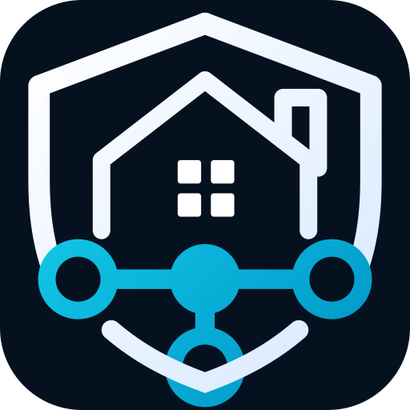

CamCore Requests is offline
Your device is not currently able to reach Cameron-Media Requests. Check your connection and try again.

Your device is not currently able to reach Cameron-Media Requests. Check your connection and try again.